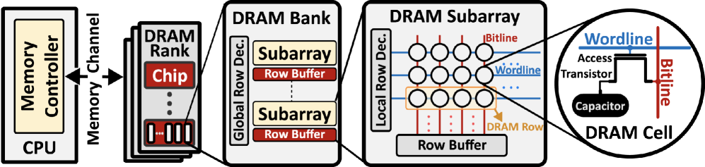
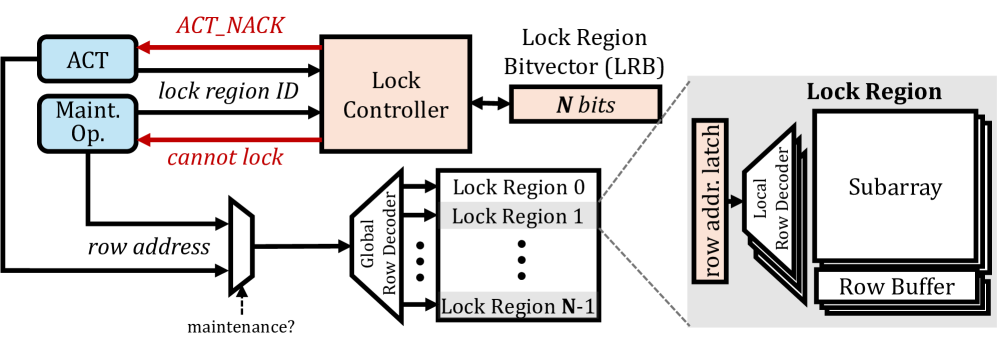
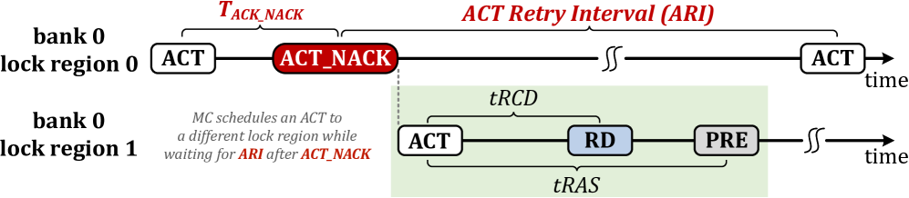
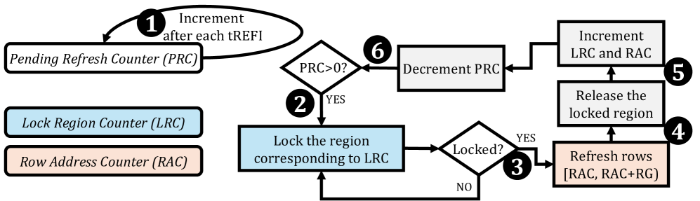
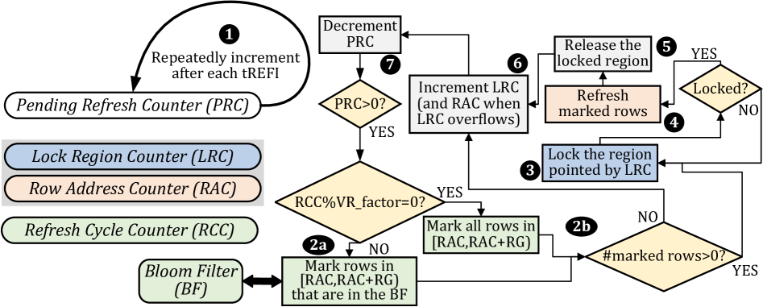

SMD? DRAM ?????? ? ??? ??? ? ????? ??? ???? ?? DRAM ?? ????? refresh/RowHammer ??/scrubbing? ???? ??, DDR4 ?? 4?? ?????? ?? 8.6% ?? ??? 4.3% DRAM ??? ??? ???? ??????.
?? DRAM? ?? ????? ? ?? ?? ???? ??? ? ???? ?? ???: DRAM refresh, RowHammer ??, memory scrubbing???. ??? ? ?? ??? ???? ??? ????(MC)? ???, ??? ???? ????? ????? ?? ?? ???? ??? DRAM ????? ??? ???? ??? ????. DDR3?? DDR4?? 5?, DDR4?? DDR5?? ?? 8?? ????, ? ? ??? ???? ???? DRAM ???? ????? ?? ?? ???? ? ???? ??? ???.
?? DDR4 ???? ??? refresh ??(REF) ??? ???? ?? ?? DRAM rank? ? 350ns ?? ?? ?? ??? ??, DSARP ?? ?? ??? ??? refresh-access parallelization? ????? MC? DRAM ??? ?? ??? ?? ??? ????. HBM ????? ??? 70?C ?? ??? ? ??? refresh ??? ? ?? ???? ???, ?? ???? MC ??? ???? ??? ?? ????? ?? ?? ??? ???.
??? ???? ?? ??? 'DRAM ???? ???? MC? ???, ? ???? ???? ????? ?? ??? ????'? ??? ??????. ????? ?? ??? DRAM ?? ????? ????? ?????, ???? ?? ??? ??? ??? ??? MC? ?? ??? ? ??? ???(overlap)? ???? ?? ?? ?? ?? ????.
SMD? ?? ????? ????: DRAM ?? ?? 'lock region'(subarray ?? bank ??)? ?? ????? ?? ??? ?, MC? ? ??? ACT ??? ??? DRAM? ??(reject)?? ???. ?? ??? ?? DDR4/5? ?? ???? ALERT_n ?? ????? MC? ????, MC? ? ??? ??? ?? DRAM ???? ??? ???. DRAM ???? 'Lock Controller'?? ???? ?????, bank? 16?? ????? ?? lock region? ?? ???? ??? ????.
SMD?? lock region? granularity? ??? ?? ??????. Subarray ?? lock region(SBLR)? bank ??(BLR)?? ?? ??? ?? ???? ???? ?????. SMD? lock region? ?? ?? ???? ??? ?? ??? ?? ?? ???? ??? ?? ??? ???? forward progress? ????? ????. DRAM ? ?? ????? 16Gb DRAM ? ?? 1.1%??, row activation latency ??? 0.4%? ????.
?? DSARP? refresh-access parallelization? ?? MC? DRAM ??? ?? ??? ???? ? ???? ???? ?????? ??? ???. SMD? ? ??? ????? ??(ACT reject ??)??? ?? ?? ??? ???? ????? ?????? MC? ?????? ??? ??? ?? '???? ??-??(maintenance-type-agnostic) ?????'? ?????.
??? Ramulator ?? ??? ?? ??? ?????? ????, 62? ?? ?? + 60? 4?? ????(SPEC CPU2006, TPC ??)? ?????. Subarray ?? lock region SMD? refresh + RowHammer + scrubbing ? ??? ?? ??? ??, DARP ?? ??? ??? 4?? ?????? ?? 8.6% ?? ??? ????. ???? ????? ??? ?? oracle(No-Refresh) ?? SMD? ? speedup? 88.3%? ???? ??? ??? ??? ????.
HBM ??? ???? SMD? 'lock region = subarray' ??? ?? ??????. HBM? ?? pseudo-channel ??? bank? ?? ??? ???? ???, pseudo-channel ?? subarray ??? lock region? ???? ???? ? ??? ??? ??? ???? ? ? ???. Lock Controller? bank? 16?? ?????? ?? HBM2E? bank ?(?? 128?)? ???? ?? ????? ?? ???. ?? HBM? ?-??? ??? 70?C ???? ??? ? ???, ?? ?? ?? ?? ?? self-tuning refresh? ?? ???? ??? SMD ?? ???? ? ??? ???.
?? ????? ??? Lock Controller? ??? ?? ??? ?? ???? ? ???. ACT reject ??(ALERT_n ???)? MC? ACT? ??? ? DRAM? ???? reject ??? ????? latency? 0.4% ?????, ?? PCB/??? ?? ?? ??? MC? ??? ????? ????? ???? ?? latency penalty? ? ?? ? ???. MC ???? reject? ACT? ?? ?? ?? ?? ???? ??? ??? reorder buffer ??? ???? ? ??, QoS? ??? ?? ???? tail latency ??? ??? ? ???.
SMD? 'MC? ?? lock region? ???? ??? ? ??? ??'? ?? ??? ????, ? ????? ???? ??? ????. ??? ??? ????? ???? ?? DRAM ? ??(tape-out)?? FPGA ????? ??? ????? ?????, ?? ???? PVT variation ??? ?? ??? ????.




